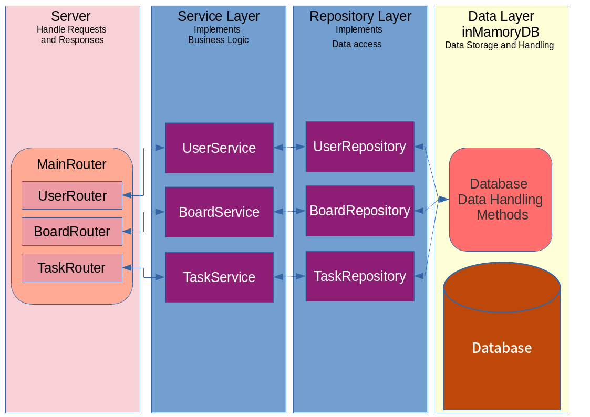
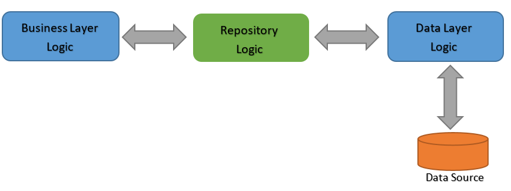

Description: This application is an implementation of the Fastify server using TypeScript. The application is a REST service with in-mamory database. We use the Repository pattern to build the application. Below is a description of each component. The menu contains detailed documentation for each component.

DATA LAYER: We define classes User, Board and Task for data instancies. To store instancies we define three arrays (for users, boards and tasks accordinly). Module InMammoryDB contains CRUD functions and together with imported arrays constitutes the data management system.
REPOSITORY LAYER: It is the abstraction layer on the data management system responsible for the implementation of data manipulation. The Layer includes modules UserRepository, BoardRepository, TaskRepository. Each module implements CRUD functionality for each class User, Board and Task, respectively.
SERVICE LAYER: It is the layer implementing business logic of the application. The Layer includes modules UserService, BoardService, TaskService. Each module implements CRUD functionality for each class User, Board and Task, respectively.
SERVER: Fastify Server on TypeScript used as main server. MainRouter is a router of Fastify. It is consists of three parts UserRouter, BoardRouter and TaskRouter.
Description: The Repository Pattern has gained quite a bit of popularity since it was first introduced as a part of Domain-Driven Design in 2004. Essentially, it provides an abstraction of data, so that your application can work with a simple abstraction that has an interface approximating that of a collection. Adding, removing, updating, and selecting items from this collection is done through a series of straightforward methods, without the need to deal with database concerns like connections, commands, cursors, or readers.

You can find documentation here: https://github.com/SeLub/nodejs2021Q4-service/tree/task-5
Generated using TypeDoc